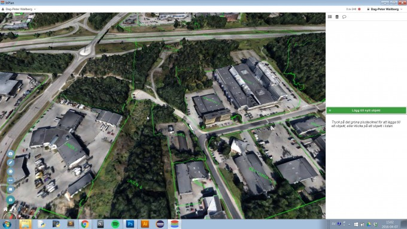
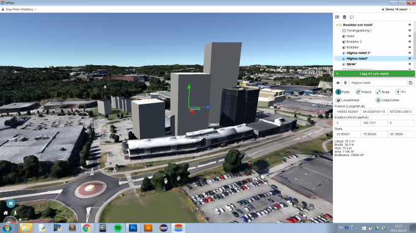
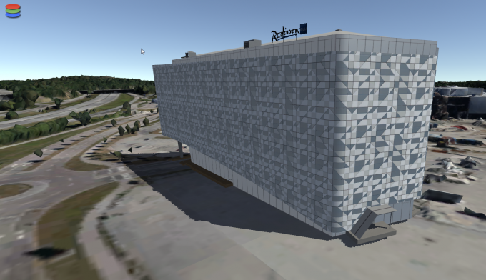
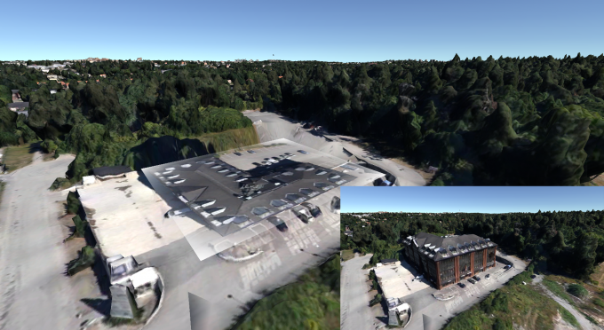
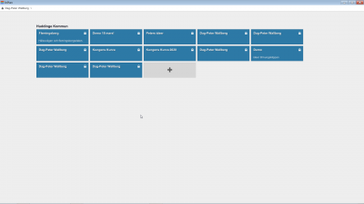

InPlan är en moln-baserad mjukvara för stadsplanering. Mjukvaran används som ett internt och externt visualiseringsverktyg för att underlätta användandet av visualisering i den kommunala planprocessen. Användaren loggar in på ATGIS servrar där kundorganisationens geodata finns tillgänglig. Därtill erbjuder InPlan verktyg för att skapa och publicera olika typer av visualiseringar utifrån detta grundmaterial. Verktygen gör det enkelt att skapa och importera material, allt från tidiga tvådimensionella skisser för tidiga skeden i planprocessen till mer kompletta 3D-modeller som lämpar sig bättre för senare skeden.
Ett exempel på arbetsprocess är att låta externa aktörer såsom byggherrar får ladda upp 3D-modeller över sina projekt för att kunna presentera en tydlig bild över hur förslag påverkar stadsbilden. Publiceringen av materialet kan göras både på hemsidor och pekskärmar i full 3D. Detta gör det möjligt att sprida information såväl internt såsom för dialog med medborgare eller annan intressent.
Exempel på material som kan visas i InPlan är: kartor, ortofoton, 3D-modeller och andra datalager. Exempel på data som kan vara tillgänglig är: fastighetsgränser, grundkarta, skogsdata, vägdragning med mera. Vilket material som går att visa beror framför allt på vilken data som finns tillgänglig i kundens organisation. Vi på ATGIS hjälper er i rätt riktning om det är något slags data ni saknar.
InPlan har ett inbyggt intuitivt 3D-modelleringsverktyg. Detta hjälper användaren att skapa enkla byggnadsförslag. Direkt i programmet visas höjd, bredd, djup, antalet våningar och BTA (bruttoarea) för byggnadsförslaget. Det är enkelt att skapa hus, byggnader som kan användas för exempelvis volymstudier. 3D-modellerna sätts ut i sin existerande omgivning vilket ger en direkt återkoppling till hur omgivningen påverkas av ett förslag vilket lämpar sig väldigt väl för arbete i tidiga skeden. Kameraverktyg 3D-modellerna kan användas för skapande av visualiseringar för tryck, web eller andra ändamål. Ingen visualiseringserfarenhet är nödvändig för att använda verktyget. Endast en enkel utbildning gör att fler personer i er organisation kan ta fram och använda sig av visualiseringar, vilket ökar er organisations effektivitet. 
InPlan har stöd för att enkelt importera Sketchup-filer i formaten .kmz och .kml samt 3D-modeller i formaten: COLLADA och .obj. På så sätt kan 3D-modeller med högre detaljrikedom importeras in i modellen för att utvärderas i sitt rätta sammanhang. 
Det finns även möjlighet att modifiera den befintliga terrängen i InPlan. På så sätt kan befintlig bebyggelse, vegetation eller mark temporärt döljas för att utvärdera hur dessa typer av åtgärder påverkar stadsbilden. Verktyget är lättanvänt och gör det enkelt att noggrant påverka terrängen utefter eget tycke.
För att förenkla skapandet av nya idéer inom samhällsbyggande så har InPlan två typer av ritverktyg. Det första verktyget är ett 2D-baserat verktyg som principiellt liknar en whiteboard. Genom att snabbt och intuitivt kunna rita upp sina visioner på det enklast möjliga viset är detta ett kraftfullt verktyg i sin enkelhet. Det ger ett diskussionsunderlag som alltid finns nära till hands. Det andra ritverktyget ritar direkt på själva terrängmaterialet. På så sätt kan man enkelt rita ut och snabbt utvärdera exempelvis nya vägdragningar från olika vinklar.
Om kunden tecknar en organisationslicens (vilket är standard för InPlan) så får alla medarbetare i kundens organisation möjlighet att skapa en användare i InPlan. Användarna får då dels tillgång till all funktionalitet i InPlan, dels tillgång till allt grundmaterial som hör till organisationen och även tillgång till sin egen projektöversikt. I projektöversikten kan användaren skapa nya projekt där den antingen jobbar själv eller bjuder in andra användare från inom eller utanför organisationens gränser. Användarna kan på så sätt enkelt arbeta tillsammans i projekten. 
Användaren skapar ett projekt där den kan importera egna 3D-modeller från externt 3D-verktyg, skapa egna enkla 3D-modeller i InPlan eller skissa i både 2D och 3D. Projekten kan användaren välja att hålla slutna, dela till andra användare inom organisationen eller dela till externa användare. Alternativt kan användaren publicera projektet antingen till intern/publik pekskärm (eller till en publik hemsida) för att på så sätt visa upp projekten för medborgare eller andra intressenter.
Möjligheten finns att publicera materialet som skapats i projektet till publika skärmar och/eller på en hemsida. Publiceringen på hemsida sker helt utan plugin och använder sig av webGL. Stöd för pekskärm/touch-skärm och Virtual Reality-glasögon - dels för internt arbete dels för extern kommunikation.
Förslag till användningsområden för InPlan:
För ytterligare information kontakta oss!
Peter Wallberg0730480686+46730480686peter.wallberg@atgis.se